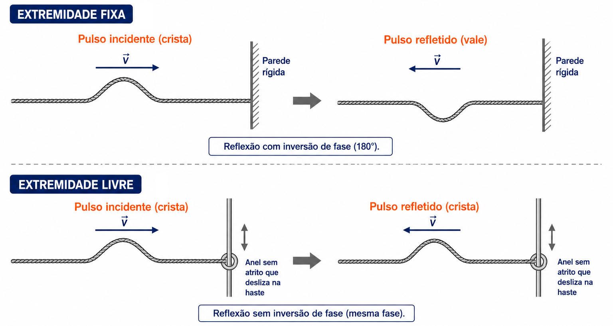
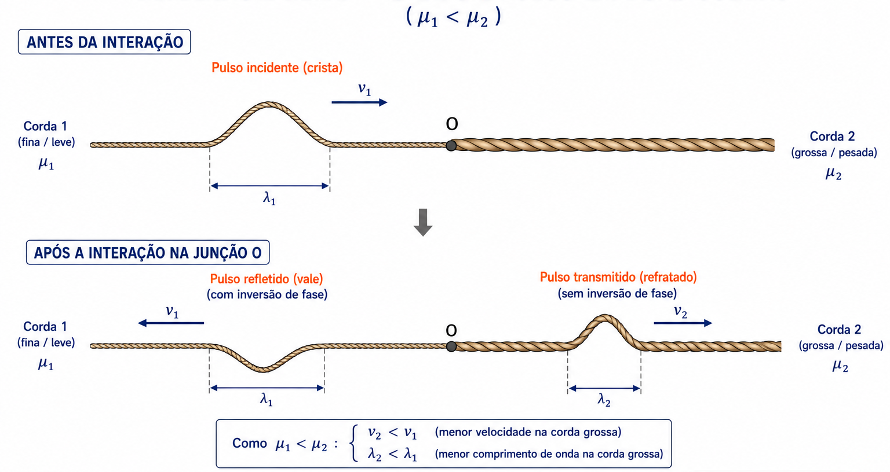
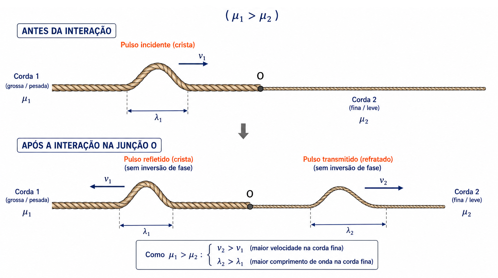

2º Ano | Aula 33: Fenômenos Ondulatórios - Reflexão e Refração de Ondas
📚 Resumo
A reflexão ocorre quando uma onda atinge uma fronteira e retorna ao meio de origem: sua frequência ($f$), velocidade ($v$) e comprimento de onda ($\lambda$) permanecem inalterados. Na reflexão de um pulso em corda, ocorre inversão de fase se a extremidade for fixa e sem inversão de fase se for livre.
A refração ocorre quando a onda muda de meio de propagação: a frequência ($f$) mantêm-se constante (pois depende apenas da fonte), enquanto a velocidade ($v$) e o comprimento de onda ($\lambda$) variam na mesma proporção ($v \propto \lambda$).
📖 Reflexão de Ondas
1. Propriedades Fundamentais
Ao refletir em uma superfície ou extremidade, a onda permanece no mesmo meio material:
Frequência ($f$): Não varia (depende exclusivamente da fonte emissora).
Velocidade ($v$): Não varia (depende das propriedades do meio).
Comprimento de onda ($\lambda$): Não varia, pois $\lambda = \frac{v}{f}$.
2. Reflexão de Pulso em Corda Tensa
Extremidade Fixa: A corda exerce uma força sobre o suporte rígido e, pela 3ª Lei de Newton, recebe uma reação de mesma intensidade e sentido oposto. O pulso refletido retorna com inversão de fase (uma crista retorna como vale).
Extremidade Livre: A extremidade pode mover-se livremente (ex: anel deslizando em haste sem atrito). O pulso refletido retorna sem inversão de fase (uma crista retorna como crista).

Figura 1: Reflexão de um pulso em extremidade fixa (com inversão de fase) e extremidade livre (sem inversão de fase).
3. Refração de Ondas e a Fórmula de Taylor
Na refração, a onda atravessa a fronteira entre dois meios com características físicas distintas.
A velocidade de propagação de uma onda transversal numa corda de massa $m$, comprimento $L$ e tracionada por uma força $F$ é dada pela Fórmula de Taylor:
$$v = \sqrt{\frac{F}{\mu}} \quad \text{onde} \quad \mu = \frac{m}{L} \text{ (densidade linear de massa)}$$
Como a frequência $f$ não se altera ao mudar de meio, vale a relação:
Quando um pulso passa da corda (1) para a corda (2) unidas na junção $O$:
Pulso Refratado (Transmitido): Nunca sofre inversão de fase.
Da corda menos densa para a mais densa ($\mu_1 < \mu_2$): A velocidade diminui ($v_2 < v_1$). A junção atua como uma extremidade "rigida", logo o pulso refletido sofre **inversão de fase**.

Figura 2: Refração da corda menos densa para a mais densa.
Da corda mais densa para a menos densa ($\mu_1 > \mu_2$): A velocidade aumenta ($v_2 > v_1$). A junção atua como uma extremidade "livre", logo o pulso refletido **não sofre inversão de fase**.

Figura 3: Refração da corda mais densa para a menos densa.
💡 Física em Ação
🦇 Sonar e Ecolocalização
O sonar de navios e a ecolocalização dos morcegos baseiam-se na reflexão de ondas ultrassônicas em obstáculos. Medindo o tempo de retorno do eco, calcula-se a distância até o alvo.
🎸 Instrumentos de Corda (Viola e Guitarra)
As cordas mais graves de um violão têm maior densidade linear ($\mu$). Pela equação de Taylor, ondas nelas propagam-se mais lentamente, resultando em comprimentos de onda e frequências sonoras mais baixas (sons graves).
✅ 5 Questões Resolvidas (R 1 a 5)
R 1: Alteração de Grandezas Ondulatórias
Enunciado: Uma onda periódica passa de um meio $A$ para um meio $B$ no qual sua velocidade de propagação é menor. O que acontece com a frequência e com o comprimento de onda nessa refração?
Resolução:
1. A **frequência ($f$) não varia**, pois depende apenas da fonte emissora.
2. Como $v = \lambda \cdot f$, se a velocidade $v$ diminui ao entrar no meio $B$, o **comprimento de onda ($\lambda$) também diminui** na mesma proporção.
R 2: Análise da Junção entre Cordas com Inversão de Fase
Enunciado: Um pulso propaga-se na corda (1) com velocidade de $10\text{ m/s}$ e atinge a junção com uma corda (2). O pulso refletido retorna com fase invertida e velocidade de $10\text{ m/s}$, enquanto o pulso refratado propaga-se com $5\text{ m/s}$. Compare as densidades lineares $\mu_1$ e $\mu_2$ das cordas.
Resolução:
1. Como o pulso refletido sofreu inversão de fase, o meio (2) comporta-se como uma barreira mais rígida/densa que o meio (1).
2. Pela Fórmula de Taylor ($v = \sqrt{F/\mu}$), como a força de tração $F$ é a mesma ao longo do sistema, menor velocidade implica maior densidade linear. Como $v_2 < v_1$, conclui-se que $\mathbf{\mu_2 > \mu_1}$ (a corda 2 é mais densa que a corda 1).
R 3: Razão de Velocidades na Junção de Cordas
Enunciado: Duas cordas (1) e (2) estão sob a mesma tração $F$. A densidade linear da corda (1) é $\mu_1 = \frac{\mu_2}{4}$. Determine a razão entre as velocidades de propagação das ondas nessas cordas ($\frac{v_1}{v_2}$).
Resolução:
Pela fórmula de Taylor:
$v_1 = \sqrt{\frac{F}{\mu_1}} \quad \text{e} \quad v_2 = \sqrt{\frac{F}{\mu_2}}$
Dividindo $v_1$ por $v_2$:
$\frac{v_1}{v_2} = \sqrt{\frac{\mu_2}{\mu_1}} = \sqrt{\frac{\mu_2}{\frac{\mu_2}{4}}} = \sqrt{4} = \mathbf{2}$.
A velocidade na corda (1) é o dobro da velocidade na corda (2).
R 4: Cálculo de Comprimento de Onda Refratado
Enunciado: Uma onda de frequência $f = 10\text{ Hz}$ propaga-se numa corda $PQ$ com velocidade $v_1 = 15\text{ m/s}$. Ao passar para uma corda $QR$ conectada à primeira, a velocidade passa a ser $v_2 = 6\text{ m/s}$. Calcule o comprimento de onda $\lambda_1$ na primeira corda e $\lambda_2$ na segunda corda.
Resolução:
1. A frequência permanece $f = 10\text{ Hz}$ em ambas as cordas.
2. Na corda $PQ$: $\lambda_1 = \frac{v_1}{f} = \frac{15}{10} = \mathbf{1,5\text{ m}}$.
3. Na corda $QR$: $\lambda_2 = \frac{v_2}{f} = \frac{6}{10} = \mathbf{0,6\text{ m}}$.
R 5: Aplicação da Equação de Taylor
Enunciado: Uma corda de massa $m = 0,2\text{ kg}$ e comprimento $L = 2,0\text{ m}$ é mantida esticada por uma força de tração $F = 100\text{ N}$. Calcule a densidade linear da corda e a velocidade de propagação de um pulso nessa corda.
Resolução:
1. Densidade linear: $\mu = \frac{m}{L} = \frac{0,2}{2,0} = \mathbf{0,1\text{ kg/m}}$.
2. Velocidade da onda: $v = \sqrt{\frac{F}{\mu}} = \sqrt{\frac{100}{0,1}} = \sqrt{1000} \approx \mathbf{31,62\text{ m/s}}$.
✍️ 5 Questões Propostas (P 6 a 10)
P 6: Inversão de Fase na Extremidade Fixa
Enunciado: Um pulso transversal em formato de crista propaga-se em uma corda cuja extremidade oposta está rigidamente presa a uma parede. Como será o formato do pulso após sofrer reflexão?
Resolução: Retornará em formato de **vale** (com inversão de fase de $180^\circ$ ou $\pi\text{ rad}$), pois a parede rígida reage com uma força vertical de sentido oposto sobre a corda.
P 7: Pulso Refratado em Junção de Cordas
Enunciado: O pulso transmitido (refratado) ao passar de uma corda mais fina para uma corda mais grossa sofre inversão de fase?
Resolução: **Não.** O pulso refratado (transmitido) **nunca** sofre inversão de fase, independentemente de passar de um meio menos denso para um mais denso ou vice-versa.
P 8: Variação da Velocidade e Frequência na Refração
Enunciado: Uma onda periódica de frequência $f = 50\text{ Hz}$ passa de um meio $1$ para um meio $2$ onde a velocidade dobra. Qual será a frequência da onda no meio $2$?
Resolução: Será de **$50\text{ Hz}$**. A frequência de uma onda é determinada unicamente pela fonte e não é alterada pela refração.
P 9: Efeito da Tração na Velocidade de Propagação
Enunciado: Se a força de tração aplicada a uma corda homogênea for multiplicada por $4$, o que ocorrerá com a velocidade de propagação do pulso na corda?
Resolução: A velocidade será **multiplicada por $2$ (dobrará)**, pois pela Fórmula de Taylor $v = \sqrt{F/\mu}$, a velocidade é diretamente proporcional à raiz quadrada da força de tração ($\sqrt{4F} = 2\sqrt{F}$).
P 10: Relação entre Comprimentos de Onda na Refração
Enunciado: Uma onda com comprimento de onda $\lambda_1 = 0,8\text{ m}$ e velocidade $v_1 = 12\text{ m/s}$ refrata para um segundo meio onde a velocidade passa a ser $v_2 = 15\text{ m/s}$. Qual é o novo comprimento de onda $\lambda_2$?